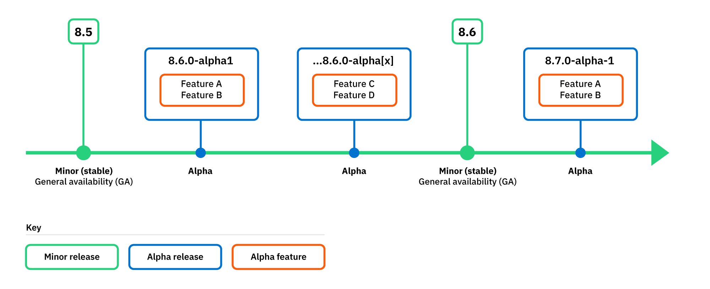
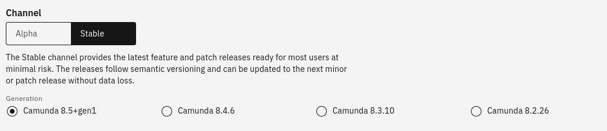
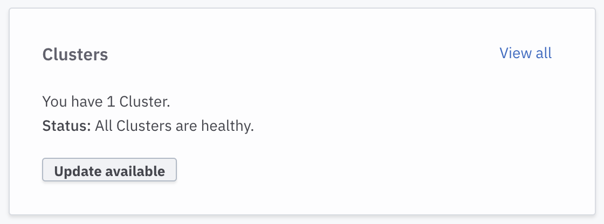

Release policy
Camunda 8 follows the Camunda release policy with the following specific clarifications.
You can find deprecation and support announcements on the Announcements page.

Alpha features and releases
It is important to understand the different ways the term "alpha" is used in the context of Camunda releases and features.
Alpha feature
Refers to a feature or component released as an alpha version, in an early state for you to test and participate in development by sharing your feedback before the feature reaches general availability (GA). Some alpha features require turning on for your cluster before you can use them. See alpha features.
Alpha release
Refers to a release made available between minor versions that allows you to preview an upcoming minor version and the alpha features included (for example, 8.5.0-alpha1, 8.5.0-alpha2, and so on). Camunda strives to release this type of release on a monthly basis. To learn more about the alpha features included in each alpha release, see release notes.
- Alpha releases cannot be updated to newer releases and are not suitable for use in production.
- An alpha release can also be made available where the entire version is an alpha with alpha limitations.
- "Alpha channel" refers to the channel you can use when provisioning a SaaS cluster. See alpha channel.
SaaS provisioning
In Camunda 8 SaaS we differentiate between components that are part of a Camunda 8 cluster (cluster components), and components outside the cluster (non-cluster components).
Cluster components
A cluster typically consists of the following components:
You can provision cluster components using one of two channels, following the Camunda release policy.

Stable channel
You can use the Stable channel to access general availability features for cluster components.
- Provides the latest feature and patch releases ready for most users at minimal risk.
- Releases follow semantic versioning and can be updated to the next minor or patch release without data loss.
- On the stable channel, all supported minor versions are made available for provisioning.
Alpha channel
You can use the Alpha channel to access alpha features and patch releases for cluster components.
- Provides alpha releases to preview and prepare for the next stable release.
- Alpha releases provide a short-term stability point to test new features and give feedback before they are released to the stable channel. Use an alpha release to test the upcoming minor release with your infrastructure.
Non-cluster components
Non-cluster components include:
Non-cluster component versions are released continuously.
- Customers are automatically updated to the latest component version when it is ready for release.
- Admins can enable alpha features for non-cluster components in organization settings.
New Camunda 8 versions
When a new Camunda 8 version is released, we try to provide the new version on our managed service at the same time.
An Update available notification is shown in Console, recommending that you update to the latest version.

Generation names
As of Camunda 8.5.0, the generation naming scheme in Camunda 8 SaaS changed to no longer include the patch version.
-
The naming scheme used for the Camunda 8.5 generations is
Camunda <Major>.<Minor>+gen<N>, whereNis incremented with every atomic change to the component version set. -
This decouples the generation name from the particular patch level of the components it contains, as some component versions such as Connectors are decoupled from other components.
-
You can learn about the particular component patch version changes in the update dialogue to the latest generation available.
Update or restart for critical issues
In our managed service, Camunda reserves the right to force update or restart a cluster immediately and without notice in advance if there is a critical security or stability issue.
Self-Managed
When a new Camunda 8 version is released, Camunda 8 Self-Managed enterprise customers are notified via email.
Non-enterprise customers can stay up to date via release blogs, announcements, or releases on GitHub and Docker Hub.
Helm chart
Since the 8.4 release, the Camunda 8 Self-Managed Helm chart version is decoupled from the version of the application. For example, the chart version is 9.0.0 and the application version is 8.4.x.
To learn more about the applications version included in the Helm chart, see the Camunda 8 Helm chart version matrix.
New Camunda 8 versions
If you are running Camunda 8 Self-Managed, see the update guide to learn how to update your Camunda 8 application or server installation to a newer version of Camunda 8.
Dependency maintenance policies
Camunda provides a standard support policy of 18 months for a particular minor version from the date it is released. During this time, patches are regularly released containing security and bug fixes, some of which may come from dependency updates. Therefore, for the vast majority of dependencies Camunda only applies patch updates.
However, certain dependencies used by Camunda 8 may have a shorter maintenance policy than Camunda itself. Camunda may adopt a different update policy for these dependencies, as listed below.
Spring
Zeebe is a Spring Boot application and leverage Spring Boot to execute fundamental functionality such as application configuration, REST infrastructure (including security), production ready features, etc.
However, Spring Boot has a shorter maintenance window than Camunda for its open-source software (OSS) offering. Versions are only supported for 13 months, versus Camunda's 18 months. To circumvent this, Zeebe patch releases also update Spring Boot minor versions, such that the latest patch release of these components uses a supported Spring version.
As for libraries and SDKs meant to be included in third-party applications, Camunda follows a best effort policy to balance compatibility and secure Spring-dependent libraries.